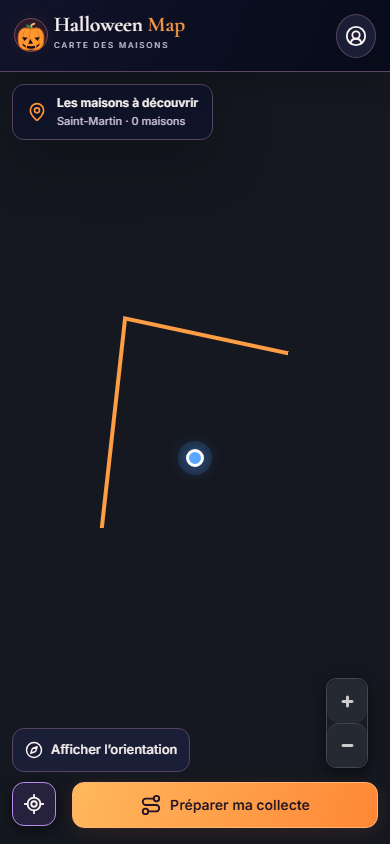
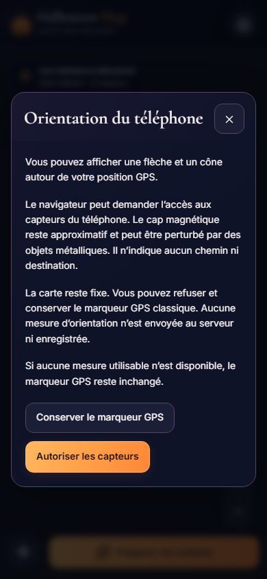
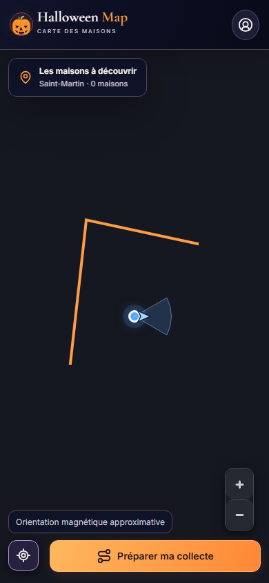
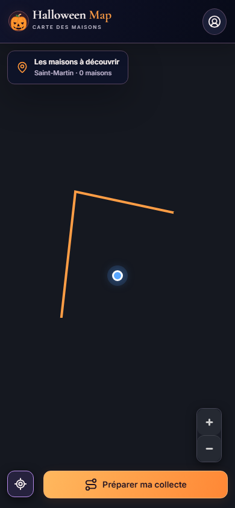
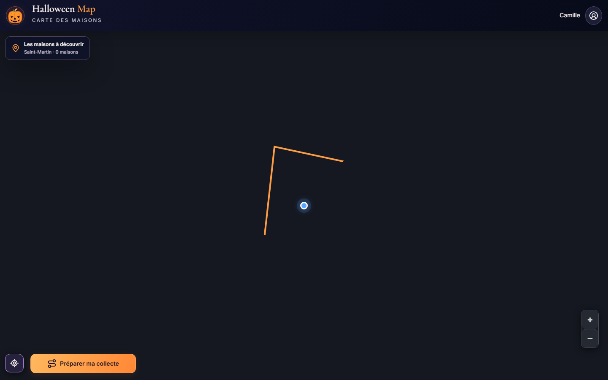

V0.9.3 — étude et prototype d’orientation
Cap magnétique approximatif, carte fixe, aucun guidage. Les captures proviennent de mesures simulées ; une validation sur iPhone et Android réels reste nécessaire. La forme orange est une fixture asymétrique servant à vérifier que la caméra ne tourne pas : ce n’est pas un itinéraire.

Proposition volontaire, sans masquer les actions essentielles.

Explication une seule fois, refus possible ; aucune demande automatique.

Trois mesures calibrées et cohérentes. L’orientation s’ajoute au point GPS.
Fallback conservé

Capteur absent ou mesure inutilisable : point GPS classique.Desktop fixe

Étude, seuils et limites : document V0.9.3. Les événements Android standards sans information de précision sont refusés par ce prototype.